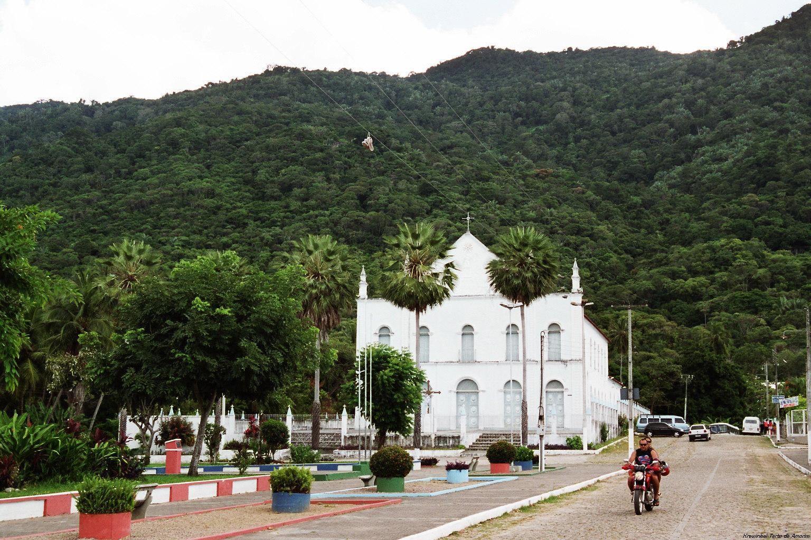
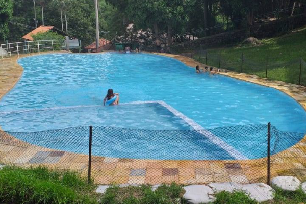
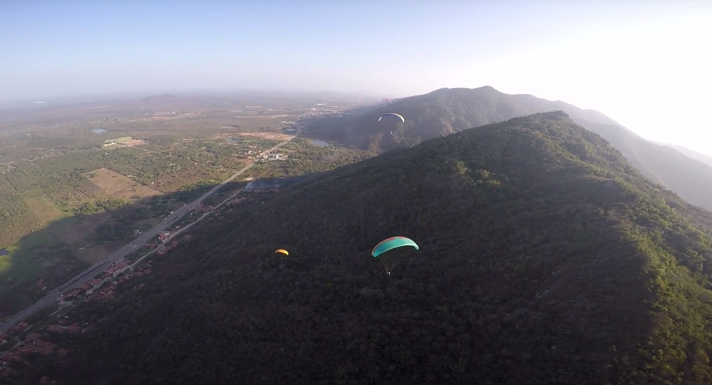
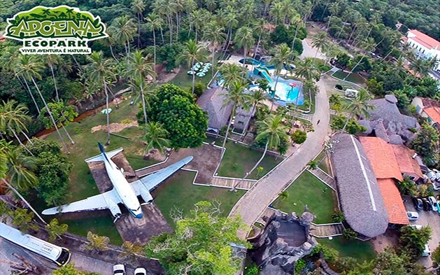

Informações técnicas sobre relevo, população, IDH etc.
| INFORMAÇÕES | |
|---|---|
| Municípios limítrofes | Fortaleza, Itaitinga, Guaiúba, Maranguape, Maracanaú |
| Fundação | 8 de outubro de 1869 (151 anos) |
| Área total | 132,427 km² |
| Clima | Tropical |
| IDH | 0,675 — médio |
| PIB | R$ 960 144 mil |
| INFORMAÇÕES TERRITORIAIS | |
|---|---|
| Número de habitantes | 83 432 habitantes |
| Superfície de Pacatuba |
14 508 hectares
145,08 km² (56,02 sq mi) |
| Densidade populacional | 575,1 ha./km² |
| Altitude de Pacatuba | 67 metros de altitude |
| Coordenadas geográficas decimais |
Latitude:
-3.98436
Longitude: -38.6161 |
| Coordenadas geográficas sexagesimais | Latitude: 3° 59' 4'' Sul , Longitude: 38° 36' 58'' Oeste |
| INFORMAÇÕES DO MUNICÍPIO | |
|---|---|
| Endereço da Prefeitura Municipal de Pacatuba |
Pacatuba
Prefeitura de Pacatuba
Rua Cel. João Carlos,345 Pacatuba - CE, 61800-000 Brasil |
| Telefone da prefeitura |
(85) 3345-2300
Internacional: +55 85 3345-2300 |
| Fax |
(85) 3345-2310
Internacional: +55 85 3345-2310 |
| Endereço electrónicoda prefeitura |
Não disponível
|
| Site oficial do município | pacatuba.ce.gov.br |
| INFORMAÇÕES DO ADMINISTRATIVAS | ||
|---|---|---|
| Prefeito de Pacatuba | CARLOMANO GOMES MARQUES | |
| Partido politico | MDB | |
| INFORMAÇÕES DE TRANSPORTE | |
|---|---|
| Transporte urbano disponível | - |
| Aeroporto |
Aeroporto Internacional Pinto Martins 25 km
Aeroporto Dix-Sept Rosado
194.1 km
Aeroporto de Sobral
194.2 km
|
| INFORMAÇÕES DE DISTÂNCIA A OUTRAS CIDADES | ||
|---|---|---|
| São Paulo : 2342 km | Rio de Janeiro : 2163 km | Brasília : 1662 km |
| Salvador : 1000 km | Curitiba : 2645 km | Belo Horizonte : 1855 km |
| Manaus : 2381 km | Fortaleza : 31 km mais perto | Recife : 613 km |
| Goiânia : 1830 km | Belém : 1135 km | Porto Alegre : 3189 km |
| Guarulhos : 2321 km | Campinas : 2294 km | São Luís : 653 km |
| Distância calculada em linha reta! | ||
Conheça mais sobre a história da Pacatuba.
A história de Pacatuba se mistura com a dos primeiros habitantes destas terras: os índios pitaguaris, potiguaras e outras tribos pertencentes ao grupo linguístico macro-tupi, como os jenipapos-canindés.
A eles, somaram-se os portugueses religiosos e militares que vieram habitar a região devido aos processos de aldeamento e catequização e visando a resguardá-la contra invasões de outros povos europeus.
Como proteção contra as invasões de outros europeus, em 1683, foi concedida, através de sesmarias, aos membros da família Correia (originários do Rio Grande do Norte), o sítio chamado Pacatuba. O povoamento da cidade se iniciou nessa época. Numa segunda concessão, em 1693, foram destinadas terras a outros posseiros. A freguesia, dedicada a Nossa Senhora da Conceição, foi criada em 5 de novembro de 1869. Em 1876, com a construção da Estrada de Ferro Fortaleza-Baturité, Pacatuba recebe duas estações de trem.
Foi o terceiro município cearense a libertar os escravos. Em 18 de março de 1842, passou a ser distrito de Maranguape. Em 8 de outubro de 1869 (comemorada como a data de criação da cidade), tornou-se vila. O município foi criado oficialmente em 17 de agosto de 1889.
Saiba mais sobre os melhores lugares e o que fazer em Pacatuba.
Nos últimos anos, o Balneário Bica das Andréas recebeu uma série de reformas. O espaço conta 20 comerciantes, sendo 16 com estrutura de quiosques, 8 novos. Das cinco piscinas, quatro são naturais e uma de cerâmica, esta última se encontrava parada. Agora, está restaurada, com um novo piso.
Fica na Serra da Aratanha no distrito de Monguba a margem da rodovia CE-060, a apenas a 30 Km de Fortaleza. Aproximadamente 15 minutos de subida a pé até a decolagem.
O Apoena Ecopark une diversão, aventura, cultura e lazer em um único ambiente, proporcionando momentos de aprendizado junto a natureza. Situado em Pacatuba, bem pertinho da serra de Aratanha, o Apoena Ecopark é um lugar mágico, com 80.000m2 de puro contato com a natureza.

Veja como chegar nos melhores pontos de Pacatuba.